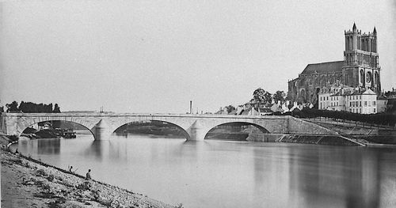

Chapitre 5 - page 1 . 2
[[ Note du Traducteur : Thomas Stevens est le premier cycliste à avoir fait le tour du monde ; par la même occasion il est le premier cycliste à avoir traversé les Etats-Unis d'océan à océan ; ce chapitre 5 relate sa traversée de l'Angleterre et de la France. ]]
De l'Amérique jusqu'à la frontière allemande
Dieppe, front de mer ; fin 19ème début 20 ème ?
Source Wikipedia
Bien que sur un rivage étranger, je ne suis pas encore, semble-t-il, laissé entièrement seul à ma compassion envers mon incapacité de parler français. Heureusement, à Dieppe, vit un gentleman du nom de Parkinson, qui, en plus d'être Anglais jusqu'à la moelle, est un homme d'affaire enthousiaste et, entre autres choses, considère de son devoir solennel de prendre en charge les cyclistes d'Angleterre et d'Amérique de passage, et de les initier en toute sécurité aux magnifiques routes de Normandie, en les dirigeant cordialement vers leur destination. Faed a eu la gentillesse d'aviser M. Parkinson de mon arrivée prochaine, et il guette celle-ci aussi chaleureusement que si j'étais un fils prodigue de retour dont il serait chargé de célébrer l'arrivée au foyer. C'est près des créneaux sombres du château de Dieppe, une forteresse autrefois presqu'inexpugnable, qui fut quelque temps possession de l'Anglais, que se niche romantiquement l'appartement de M. Parkinson, et cet homme avenant propose sans attendre de m'accompagner dans la région. Sur notre chemin à travers Dieppe, je remarque des paysans en blouse bleues qui guident de petits troupeaux de chèvres dans les rues, les appelant avec un instrument particulier et mélodieux dont le son ressemble assez à une cornemuse. J'apprends que ce sont des paysans de Normandie, qui gardent leurs troupeaux autour de la ville tout l'été, le lait de chèvre étant considéré comme bénéfique pour les nourrissons et les invalides [[ Ndt : Jusque vers les années 1920, dans plusieurs villes de France, des fermiers passaient dans les rues avec leur troupeau de chèvres et vendaient du lait de chèvre trait à la demande, au porte à porte ; idem avec des troupeaux de vaches et d'ânesses. L'instrument auquel fait allusion Stevens est peut-être voisin de la musette à anche double soufflée directement par le joueur - instrument en usage chez les bergers pour tromper la solitude et rassembler leur troupeau Source : http://www.folkloredechampagne.fr/files/pmedia/public/r94_9_rfc_91.pdf - ou de la bombarde ; ce pourrait-être aussi le biniou, mais on peut penser que dans ce cas Stevens aurait souligné la ressemblance de l'instrument avec la cornemuse, or ici il souligne seulement la ressemblance du son, ce pourquoi nous penchons pour un instrument voisin de la musette ou la bombarde. Source http://www.attelage-patrimoine.com/2015/03/les-voitures-de-transport-du-lait-laitieres.html | https://sites.google.com/site/chevresetchevriers/home/chevres-et-chevriers-en-cartes-postales-anciennes-cpa-ville | http://echos-de-mon-grenier.blogspot.com.co/2015/03/des-chevres-paris.html
Un extrait de Paris est une fête de Ernest Hemingway, relatant sa vie à Paris dans les années 1920 :
'Le soleil séchait les façades humides des maisons en face de ma fenêtre. Les boutiques avaient encore leurs volets. Le troupeau de chèvres remonta la rue au son du pipeau et une voisine, au-dessus de nous, sortit sur le trottoir avec un grand pot. Le chevrier choisit l’une des chèvres laitières noires, aux pis lourds, pour la traire dans le pot, tandis que le chien poussait le troupeau vers le trottoir. Les chèvres regardaient autour d’elles, tordant le cou comme des touristes devant un paysage. Le chevrier prit l’argent, remercia la femme, et poursuivit sa route vers le haut de la rue en soufflant dans son pipeau et le chien guidait le troupeau hochant des cornes. Je me remis à écrire et la voisine remonta l’escalier avec son lait de chèvre.' ]].
Musette
Source Wikipedia
Bombarde - dessous, son de la bombarde
Source Par Pmx — Travail personnel, CC BY 2.5, https://commons.wikimedia.org/w/index.php?curid=982035
Chevrier à Paris, début 20ème sans doute
Ils mènent les chèvres d'une maison à l'autre, et traient à leur porte la quantité de lait que leurs clients souhaitent, une coutume qui nous le comprenons facilement ne deviendra jamais très populaire auprès des laitiers Anglo-Saxon, car elle ne laisse aucune chance possible pour les ententes abusives entre sangsues [[ Ndt : sous-entendu ici les producteurs et les distributeurs, voir note suivante ]] sur les prix et les bénéfices correspondants [[ Ndt : dans le texte original, nous avons traduit par sangues l'expression pump handle, qui signifie littéralement levier de pompe ; Stevens fait allusion aux évènements survenus en 1883 à New York et Boston. Les producteurs de lait considérèrent que l'offre était trop importante, déclarèrent une "guerre du lait" et stoppèrent l'approvisionnement, répandant le lait que certains producteurs continuaient a envoyer. En mars 1883, un comité constitué des principaux producteurs et distributeurs de lait conclut un accord pour une augmentation de 60 % du prix du quart - environ 0,9 litre - Ce comité fut surnommé Pump Handle Association par les producteurs non complice de cette entente. Source https://goo.gl/JnjdS0 ]]. La matinée est superbe avec le soleil et les chants des chanteurs à plumes, ensemble, nous descendons la belle vallée d'Arques [[ Ndt : l'Arques est un fleuve côtier, de seulement 6 km de long, qui se jette dans la Manche à Dieppe. Source https://fr.wikipedia.org/wiki/Arques_(fleuve) ]], sur des routes tout simplement parfaites pour rouler ; en arrivant dans les ruines pittoresques du château d'Arques, nous faisons halte et en profitons pour jeter un coup d'oeil aux murs éboulés de cette forteresse autrefois célèbre, que le lierre de Normandie recouvre partiellement d'un manteau charitable vert foncé, comme si son but et sa mission étaient de cacher la grandeur déchue au regard indécent de l'étranger de passage.
Tout au long des routes, nous rencontrons des paysans à la mine heureuse qui se dirigent vers le marché de Dieppe avec leurs produits. Ils conduisent des chevaux de Normandie - cela signifie des animaux beaux, grands et fougueux - qui, n'étant pas familiers avec les bicycles, s'offusquent presque invariablement lorqu'ils voient les nôtres et se pavanent à la manière habituelle des destriers à la sensibilité exacerbée. Contrairement à son parent anglais, le cheval normand ne regarde pas "celui qui roule" [[ Ndt : nous avons déjà expliqué avant dans ce chapitre notre emploi de l'expression 'celui qui roule', désignant ici par nous le bicycle ]] d'un oeil blasé, mais prend parti presque systématiquement contre nous, et habituellement de la manière la plus déterminée, tel le cheval de transport, à oeillères, de l'agriculteur des États-Unis. La similitude entre les populations de ces deux pays, je suis bien obligé d'admettre, cependant, ne va pas plus loin que le cheval lui-même et ne s'étend pas au conducteur ; car, tandis que le cheval de Normandie se montre indocile et menace de renverser le véhicule dans le fossé, le visage du Français est enveloppé de larges sourires confus ; et, alors qu'il s'efforce frénétiquement de garder le cheval réfractaire sous contrôle, il récite au cycliste tout un dictionnaire d'excuses pour la conduite insensée de l'animal, touche son chapeau avec une expression de profond respect en remarquant que nous avons considérablement ralenti, et déclame continuellement un Bon jour, monsieur [[ Ndt : en français dans le texte ]], au fur et à mesure que nous passons, d'une voix qui indique clairement qu'il reconnaît au cycliste - et à tous les autres - le droit à la moitié de la chaussée. Il y a quelques jours, j'ai qualifié les routes anglaises de parfaites, et l'Angleterre de paradis des cyclistes ; et c'est vrai ; mais les routes de Normandie sont encore supérieures, et le paysage de la vallée d'Arques est tout simplement charmant. Il n'y a pas une pierre qui traîne, une ornière ou une dépression où que ce soit sur ces routes, et ce n'est guère exagéré de les comparer à des tables de billard pour la douceur de leur revêtement. Avançant bon train et en douceur sur elles, on se demande sans cesse comment ils peuvent les maintenir en un tel état. Si on avait des routes d'une telle qualité en Amérique on y verrait en permanence celui qui roule.
Un déjeuner de fromage et de cidre de Normandie à Clères [[ Ndt : commune de Seine-Maritime, édifiée à partie du 9ème siècle ; environ 780 habitants lors du passage de Stevens. De nos jours, parc zoologique renommé, avec un chateau qui fut la demeure de Jean Delacour, ornithologue de renommée mondiale. Source http://www.mairie-cleres.fr | https://fr.wikipedia.org/wiki/Jean_Th%C3%A9odore_Delacour ]], et nous voilà en route vers Rouen. À chaque carrefour est érigé un poteau indicateur en fer, avec les directions de plusieurs des villes les plus proches, indiquant les distances en kilomètres et en yards ; et de petits piliers en pierre sont édifiés le long de la route, marquant chaque centaine de yards [[ Ndt : 1 yard = 91 centimètres. Ces petits piliers en pierre que cite Stevens sont certainement des bornes hectométriques ]].
Cleres, Seine-Maritime
Source http://www.mairie-cleres.fr
Borne hectométrique.
Le chiffre indique la distance entre 2 bornes kilomètriques ( 5 = 500 mètres de chaque borne)
Arrivés à Rouen à quatre heures, M. Parkinson me montre la célèbre vieille cathédrale de Rouen, le Palais Justice et d'autres exemples du vieux Rouen médiéval que je souhaite visiter, et, après m'avoir invité à rester et à diner avec lui près des eaux murmurantes de la Seine historique, il me souhaite bon voyage [[ en français dans le texte original ]], me montre la direction du sud et me laisse finalement étranger parmi les étrangers, contraint de «comprendre le français» [[ en français dans le texte original ]] sans assistance. Quelque pédant a marqué dans les esprits que trop d'une bonne chose est pire que pas du tout ; quoi qu'il en soit, après avoir conclu que je trouverais dans tous les coins nécessaires ces poteaux indicateurs en fer si bien conçus qui indiquent la route avec une justesse infaillible, et étant sans doute influencé par le relief moindre de la route suivant le bas de la vallée de la Seine par rapport à celle qui chemine sur les falaises, je m'égare vers la tombée du jour dans Elbeuf, au lieu d'être à Pont de l'Arques, comme je l'avais prévu ; mais peu importe et je me contente de tirer le meilleur parti de l'endroit [[ Ndt : commune de Seine-Maritime, à 23 kilomètres de Rouen. Environ 22000 habitants lors du passage de Stevens, importante industrie drapière jusqu'à la Deuxième Guerre mondiale. Source https://fr.wikipedia.org/wiki/Elbeuf | http://www.mairie-elbeuf.fr/Decouvrir-Elbeuf/Un-peu-d-histoire ]].
Elbeuf en 1900
Source Wikipedia
Roulant le long des rues tortueuses et pavées d'Elbeuf, j'entre dans un petit hôtel et, après l'échange habituel de civilités, je lève les sourcils face à ce qui me semble une dame de caractère et demande "Comprendre Anglais?" "Non", répond La dame, perplexe, alors que je donne libre cours à mes aptitudes pantomimiques pour essayer de faire comprendre ce que je veux. Après quinze minutes d'effort désespéré, mademoiselle, la fille, est expédiée à l'autre bout de la ville, et revient à présent avec un français barbu, qui, dans un anglais très approximatif, tout en accompagnant ses paroles avec des gesticulations extraordinaires, me fait comprendre qu'il est la seule personne dans tout Elbeuf capable de parler anglais et me prie de m'en remettre à lui sans réserve. Il s'avère précieux et obligeant, se préoccupant aimablement de m'obtenir un hébergement confortable à un tarif raisonnable. Cet hôtel d'Elbeuf est cependant tout le contraire d'un établissement raffiné, et le propriétaire [[ en français dans l'original ]], bien qu'apparemment de bon sens, me sert au petit-déjeuner une bouteille de l'inévitable vin ordinaire [[ en français dans l'original ]] (vin rouge commun), au lieu du café que mon interprète bien utile avait indiqué hier soir en passant la commande. Si un Français se met à table seulement pour un morceau de pain et de fromage, il mange habituellement avec une bouteille de vin ordinaire. Ici les pains sont des rouleaux de trois ou quatre pieds de long [[ Ndt : 90 ou 120 centimètres ]], et souvent l'un d'entre eux est posé en travers - ou plutôt le long, car il est souvent plus long que la table est large - de la table pour que vous puissiez vous en couper pendant votre repas, selon votre capacité ou votre inclination à manger du pain.
Porteuse de pain, 1905
Source Gallica
Monsieur, l'érudit, se déplace pour voir son ami et protégé anglais le lendemain matin, quelques minutes après que son ami et protégé Anglais soit parti pour une rue éloignée appelée Rue Poussen, que le garcon lui a indiquée sans le faire exprès quand il a demandé le chemin pour le bureau de poste ; le résultat naturel, je suppose, de la différence entre la façon dont on le prononce à Elbeuf et ma prononciation. En découvrant mon erreur en arrivant rue Poussen, je suis plus chanceux dans ma démarche quant aux capacités d'interprète d'un passant, qui envoie un gamin d'Elbeuf me guider jusqu'au bureau de poste.
Bureau de poste d'Elbeuf (le bâtiment avec l'horloge), autrefois
Dans tous les pays les employés de poste sont des gens proverbialement intelligents, par conséquent, cela ne me prend pas longtemps pour traiter mes affaires au bureau de poste ; mais maintenant - fantôme de César! - [[ Ndt : vraisemblablement allusion à la tragédie Jules César, de William Shakeapeare, dans laquelle le fantôme de César se moque de Brutus pour son imminente défaite (dans la bataille de Philippes, 42 av J.-C.) Source https://en.wikipedia.org/wiki/Julius_Caesar_(play) ]] j'ai négligé de noter soit le nom de l'hôtel, soit la rue dans laquelle il se trouve, et pendant la demi-heure qui suit, j'erre aussi impuissant que les «bambins dans le bois» [[ Ndt : "Babes in the Wood" est un conte anglais traditionnel pour enfants, dans lequel des enfants se retrouvent orphelins et sont remis par un oncle à des criminels pour qu'ils soient assassinés et ainsi recevoir l'héritage ; l'expression est passée dans le langage populaire, pour désigner des personnages naifs et manquant d'expérience se retrouvant sans en avoir conscience dans des situations potentiellement dangereuse ou conflictuelle. Source https://en.wikipedia.org/wiki/Babes_in_the_Wood ]]. Une fois, deux fois, je crois reconnaître l'emplacement ; Mais les maisons traditionnelles d'Elbeuf ne se distinguent pas facilement les unes des autres, et je suis en train de regarder autour de moi avec l'attitude déconcertée de celui qui ne sait pas où il se trouve, quand, hein! La propriétaire, qui se demandait certainement ce que j'étais devenu, apparaît à la porte d'un édifice que je n'aurais sans doute jamais reconnu comme mon hôtel, un balai à la main, et son agréable, «Oui, monsieur», résonne joyeusement et est le bienvenu, dans ces circonstances, comme on peut facilement l'imaginer. Toujours sur des bonnes routes, entre Gaillon et Vernon on peut voir la superbe grande route, lisse, droite et large, s'étendant sur des kilomètres entre des rangées de peupliers verdoyants, formant de magnifiques avenues qui en rajoutent encore à la beauté naturelle du pays. De nobles châteaux apparaissent ici et là, souvent situés sur les falaises de la Seine, et forment l'arrière-plan d'une longue avenue de châtaigniers, d'érables ou de peupliers, au droit de la route principale et voie majeure. La prospérité bien connue de la paysannerie française est perceptible de tous côtés, et en particulier au loin sur la gauche, où leurs petites fermes bien cultivées font de loin ressembler les falaises en pente à un immense couvre-lit en patchwork. Une autre preuve flagrante et sans équivoque de la prospérité des paysans de Normandie est le nombre remarquable de pièces qu'ils parviennent à répartir sur la surface de leurs pantalons, dans cette région chaque paysan a en moyenne environ vingt rapiècements, de toutes formes et tailles. Lorsque les gouvernements britanniques ou des États-Unis imposent des impôts supplémentaires aux personnes, les gens déclarent qu'ils ne le supporteront pas, puis finalement le payent tout simplement ; mais lorsque la Chambre des Députés à Paris serre un peu plus la vis financière, le paysan français met tout simplement un autre patch au fondement de ses pantalons et souligne en souriant la différence entre le patch et la nouvelle paire qu'il voulait acheter !
Une vaste caserne de cavalerie marque l'entrée de Vernon et, en regardant avec intérêt les mouvements des troupes qui effectuent leurs manoeuvres du matin, je ne peux pas m'empêcher de penser que, avec des routes aussi splendides que celles de France, une des mesures les plus pratiques qu'elle pourrait prendre pour la défense de son territoire serait d'équiper quelques régiments d'infanterie légère de bicycles ; ce serait tout naturel de penser qu'il s'agit d'un progrès que l'infanterie puisse se diriger vers le front à raison de soixante-quinze ou cent miles par jour. Régulièrement après quelques miles, ma route traverse la rue longue et décrépite d'un village, où chaque bâtisse est de pierre massive et a l'air d'avoir au moins mille ans ; tandis qu'à la plupart des carrefours au milieu des champs, et à toutes sortes de coins et de recoins inopinés des villages, des crucifix sont érigés pour recevoir ceux enclins à la dévotion. La plupart des rues de ces villages de la France profonde sont pavées de pierres carrées que l'usure des siècles a généralement trop dégradées pour le bicycle ; Mais de temps à autre certaines sont cyclables, et l'étonnement des habitants alors que je passe tranquillement en roulant, sifflant l'air solennel de «Roll, Jordan, roll» [[ Ndt : "Roll, Jordan, Roll", est un negro spiritual écrit par Charles Wesley au 18ème siècle et qui devint célèbre chez les esclaves aux Etats-Unis durant le 19ème siècle. Les esclaves se sont approprié ce chant comme un message pour l'évasion (originalement, ce chant avait été écrit par Charles Wesley, un pasteur méthodiste anglais, pour christianiser les esclaves et leur faire abandonner leur foi dans leurs religions traditionnelles.) Source https://en.wikipedia.org/wiki/Roll,_Jordan,_Roll ]], est vraiment très divertissant. Chaque village quel que soit sa taille fait étalage d'une église qui, pour la délicatesse de son architecture et le coût apparent de la construction, apparaît hors de proportion au vu des rues délabrées aux bâtiments informes qu'elle domine. Tout ici semble construit comme pour durer toujours, et il n'est pas rare de voir une pièce de terrain ridiculement petite entourée d'un mur de pierre construit comme pour résister à une canonnade ; Une enceinte qui doit avoir coûté plus cher que 50 récoltes au large de l'espace clos pourraient valoir.
Roll, Jordan, roll, enregistré le 21 décembre 1909 à Camden, New Jersey (USA)
Cliquez sur la flèche au centre du lecteur, puis sur la petite flèche à gauche
Patientez quelques instants, le lecteur ne démarre pas instantanément !
Source http://www.loc.gov/jukebox/recordings/detail/id/1813/
Tôt dans la soirée j'arrive à la grande ville de Mantes, et trouve une bonne auberge pour la nuit [[ Ndt : ville édifiée à partir du 9ème siècle ; environ 6600 habitants lors du passage de Stevens. La ville de Mantes aurait été surnommée 'La Jolie' vers l'an 1100 en raison de ses embellissements au cours des années précédentes. Source Wikipedia ]].
Mantes vers 1874

Source Gallica.bnf.fr
Les marchandes des quatre saisons étalent leurs diverses marchandises tout au long de la rue principale de Mantes alors qu'en cette matinée je roule vers les rives de la Seine. Je m'arrête pour me faire servir du lait fraîchement tiré, et tout en le buvant, je désigne les longues rangées de légers gâteaux feuilletés enfilés sur des cordes et fait comprendre par geste que je souhaite en goûter quelques uns à un prix préferentiel ; mais la bonne dame sourit et secoue la tête vigoureusement, autant que faire se peut, car j'apprends par la suite que ces gâteaux ne sont rien de moins que des blocs de levures séchées, un petit-déjeuner qui aurait probablement provoqué des troubles spontanés. M'engageant sur la mauvaise route en sortant de Mantes, je me retrouve au bord de la Seine, au milieu des bâteliers. On me montre le bon chemin, mais de Mantes à Paris, ce ne sont plus les bonnes routes de Normandie ; de Mantes vers le sud, elles se dégradent progressivement jusqu'à n'être guère meilleures que les "routes lissées à la toile émeri de Boston" . Ayant décidé de tabouer [[ Ndt : déclarer, considérer tabou. Source http://littre.reverso.net/dictionnaire-francais/definition/tabouer ]] complètement le vin ordinaire je stupéfie le restaurateur d'un village où je prends le déjeuner en signalant que je ne veux pas de la bouteille de vin et en demandant de l'eau, et les regards jetés dans ma direction par les autres clients indiquent assez clairement qu'ils considèrent l'évènement comme quelque chose d'extraordinaire.
Je passe par Saint Germain, Nanterre, le magnifique Arc de Triomphe se profile au loin, et vers deux heures, en ce mercredi 13 mai, j'entre à bicycle par la Porte Maillot dans la trépidante capitale. Les voies pavées prennent désormais la place du macadam, mais pas très loin des limites de la ville, je remarque le «magasin de cycles Renard Frères» [[ Ndt : il s'agit de la Fabrique de Vélocipèdes Légers en Acier Renard Frères, qui était sise 11 rue Duret, Paris (16) ]].
Publicite des vélocipèdes Renard Frères
dans le Bulletin Mensuel de la Société d'Acclimatation, février 1881
Source https://archive.org/details/bulletindelasoc38soci
Sachant instinctivement que les sentiments fraternels engendrés par la roue magique s'étendent partout où vit un cycliste, je n'hésite pas à descendre du bicycle et à présenter ma carte de visite. Oui, Jean Glinka, apparemment un employé ici, comprend l'anglais ; ils ont tous entendu parler de mon périple, et me souhaitent bon voyage, et Jean et son bicycle sont sur le champ désignés et délégués pour m'accompagner en ville et me trouver un hôtel à ma convenance. Les rues de Paris, comme les rues de toutes les grandes villes, ont un pavement irrégulier et elles viennent juste d'être arrosées. Comme tout Français qui se respecte, le malchanceux Jean souhaite faire étalage de sa dextérité sur un bicycle devant un visiteur si distingué ; il fait des circonvolutions inutiles sur le pavage glissant, et ce faisant se renverse lui-même en croisant une chaussée, déchire son pantalon et endommage son bicycle. A l'Hôtel du Louvre, ils n'acceptent pas les bicycles, n'ayant aucune place où les entreposer ; mais près de là, nous trouvons un établissement moins prétentieux, où, après m'avoir obligé à remplir une fiche inimaginable, où je dois indiquer mon nom, ma résidence, mon âge, ma profession, mon lieu de naissance, le dernier endroit où j'ai logé, etc... ils me donnent enfin une chambre.
De Paul Devilliers [[ Ndt : secrétaire de la Sociéte Vélocipédique Métropolitaine, et premier président, en 1881, de l'Union Vélocipédique Française (UVF) ]], à qui je remets une lettre d'introduction, j'apprends que si j'attends jusqu'au vendredi soir et si je me rends au local de la Société Vélocipédique Métropolitaine, le président de ce club pourra m'indiquer le meilleur itinéraire cyclable entre Paris et Vienne ; en conséquence, je reste à l'hôtel une paire de jours. Beaucoup des sites célèbres de Paris sont facilement accessibles depuis mon hôtel. Le lecteur, cependant, en sait probablement plus sur les sites de Paris que ce qu'on peut découvrir en deux jours ; je m'abstiendrai donc de les décrire ; mais mon hôtel mérite quelques commentaires.
Hôtel du Loiret (de nos jours), rue des Mauvais Garçons, Paris 4ème
L'Hôtel où était hébergé Stevens ? Sa position correspond à ce qu'il en dit.
Source https://www.viamichelin.com
Parmi les commodités agréables et pratiques de l'Hôtel du Loiret, il y a le fait qu'on ne peut ouvrir la porte de sa chambre depuis l'extérieur qu'avec la clef ; et à moins d'avoir bien compris cette bizarrerie fonctionnelle, et de l'avoir toujours présente à l'esprit, c'est un principe, qu'à un moment ou un autre en sortant de la chambre, on ferme la porte en laissant la clé à l'intérieur par distraction. C'est bien sûr, une des premières choses qui m'arrivent, et cela me coûte un demi-franc et trois heures de préoccupation avant de revoir l'intérieur de ma chambre. L'hôtel garde un passe-partout rudimentaire, probablement pour des situations d'urgence de cette nature ; mais, en manipulant cet instrument grossier, le portier verrouille en fait la porte et, comme le passe-partout est sensé manoeuvrer seulement la serrure et pas le verrou, évidemment, cela empire largement le problème. Les clés de chaque pièce de l'établissement sont ensuite apportées et essayées successivement, mais aucune d'entre elles n'est un double de la mienne. Qu'est-ce qu'on va faire ? Le portier a l'air aussi abattu que si Paris était sur le point d'être canonnée, tout en descendant communiquer la nouvelle catastrophique au propriétaire. Le propriétaire monte - il doit peser dans les 135 kilos - en soufflant comme une cheminée à chaque pas. Pendant quinze minutes infructueuses, le passe-partout est agité et retourné dans le verrou, et le gros propriétaire frotte sa tête chauve avec impatience, mais sans succès. Chacun retourne à ses occupations respectives. Impatient de récupérer mes accessoires d'écriture, je lève les yeux sur les barreaux d'acier au-dessus aux fenêtres du cinquième étage, et fait comprendre que si on me procure une corde je descendrai par ce moyen et entrerai par la fenêtre. Tous sans exception désignent la rue ; et, supposant qu'ils ont envoyé chercher quelque chose ou quelqu'un, je m'assieds et attends avec la patience de Job que quelque chose se passe. Rien, cependant, n'arrive, et au bout d'une heure, je commence évidemment à me sentir à la fois négligé et impatient, et je suggére de nouveau la corde ; enfin, sur un signe du propriétaire, le portier me conduit chez un serrurier au coin de la rue, où, jouant de son plein gré le rôle d'interprète, il convainc en mon nom, pour un demi-franc, un homme de venir avec un trousseau d'au moins une centaine de passe-partout de toutes les formes possibles pour attaquer le verrou réfractaire. Après avoir essayé presque toutes les clés, et avoir proféré quantité d'exclamations françaises impétueuses, cet homme perd espoir lui aussi ; mais, maintenant que tout a été essayé en vain, le visage du portier s'illumine soudainement, il se glisse silencieusement dans une pièce voisine et entre dans la mienne en l'espace de deux minutes en soulevant simplement un petit crochet avec la lame de son couteau. Il semble y avoir un léger rafraîchissement, de quelque sorte, entre le proprietaire et moi après cet incident, probablement en raison de la valeur de chacun quelque peu rabaissée dans l'estime de l'autre à cause de celà. Le propriétaire, sans doute, pense qu'un homme capable de laisser la clé à l'intérieur de la chambre doit être le pire type d'ignorant ; et évidemment que mon opinion de lui pour avoir laissé un tel arrangement diabolique inchangé dans la seconde moitié du dix-neuvième siècle n'est pas loin du même ordre.
En visitant le quartier général de la Société Vélocipedique Métropolitaine le vendredi soir, je reçois du président les indications escomptées concernant ma route, et suis prêt à continuer vers l'est le matin suivant. Descendre les célèbres Champs-Elysées à onze heures du soir, lorsque les espaces pour les concerts dans les jardins sont bondés et que toute chose flamboie splendidement, avec des myriades de lumières électriques disposées en ornement dans les arbres en de longues rangées brillantes, constitue un souvenir pour toute une vie. Avant l'heure pour le petit-déjeuner, je quitte la ville par la Porte Daumesnil [[ Ndt : Porte Dorée en fait ; elle fut percée au milieu du 19ème siècle dans l'enceinte de Paris, au bout de l'avenue Daumesnil, et jouxte le bois de Vincennes. Source https://fr.wikipedia.org/wiki/Porte_Dor%C3%A9e ]] et roule dans les environs vers Vincennes et Joinville, en pédalant, au son de la musique martiale, pendant des kilomètres au-delà de la Porte.
Porte Dorée, depuis l'avenue Daumesnil, début année 1900
Source Wikipedia
Les routes à trente milles à l'est de Paris n'ont pas la qualité des routes de Normandie, mais la région est sur presque tout le parcours d'un relief facile, et mile après mile [[ 1 mile = 1,6 kilomètre ]], lieue après lieue [[ Ndt : dans les pays anglo-saxon la lieue vaut 4,8 kilomètres ; 3,8 kilomètres en France. ]], la route se trouve sous des avenues de platanes et de peupliers, qui, traversant la plaine dans toutes les directions comme les murs d'émeraudes de cet édifice qu'est la nature, ornent et embellissent ce qui serait autrement ici un territoire plutôt monotone. Les villages sont peu différents des villages de Normandie, mais les églises n'ont pas leur beauté architecturale, étant pour la plupart des structures massives sans prétention à l'ornementation artistique. Les prêtres d'allure monacale sont un trait particulier de ces villages, et quand, passant dans les rues étroites et sinueuses de Fontenay [[ Ndt : sans doute Fontenay-Trésigny, commune de Seine-et-Marne, à 36 km au nord-ouest de Provins. 1350 habitants lors du passage de Stevens. ]], je roule sous une arche massive de pierre, je regarde à l'entour et j'observe les prêtres encapuchonnés et tout le reste de l'endroit en harmonie, je peux facilement m'imaginer transporté en arrière à l'époque médiévale.
Fontenay-Trésigny, en 1906 ; l'arche sous laquelle est passé Stevens ?
Source https://goo.gl/TyZlgh
Par Avuxon (Travail personnel) [GFDL (http://www.gnu.org/copyleft/fdl.html) ou CC BY-SA 3.0
(http://creativecommons.org/licenses/by-sa/3.0)], via Wikimedia Commons
Ces petits villages de la France profonde sont l'endroit le moins prometteur qu'on puisse imaginer pour une personne affamée passant à bicycle ; souvent, on peut parcourir toute la longueur du village en regardant autour de soi dans l'espoir de quelque chose pour soutenir l'organisme, et tout ce que découvre le regard affamé c'est une paire de baguettes de pain d'un mètre vingt de long dans une vitrine envahie de poussière et dans une autre quelques crucifix et attirail catholique romain lugubres. Dans leur mise personnelle les paysans ne sont pas non plus comparables à ceux de la paysannerie normande. Certes, ils ont autant de reprises sur leurs pantalons, mais ils ne semblent pas avoir acquis l'art de les disposer de manière à produire le même effet pittoresque que le paysan de Normandie ; le vêtement courant est presque invariablement un velours côtelé sans forme, d'une largeur et de dimensions exagérées des plus laids à observer.
L'axiome bien connu sur les bons chemins qui conduisent à l'égarement
[[ Ndt : se réfère vraisemblablement à un chant religieux qu'on trouve dans l'ouvrage Hymns and Spiritual Songs, appendix to Dr Watt's Psalms and Hymns, dont une strophe dit :
I am, say Christ, the Way,
Now if we credit Him,
All other paths must lead astray
How fair soever they seem. Source https://goo.gl/VE0Q1j
qui dit plus ou moins :
Je suis, dit Christ, la Voie, Si nous croyons en Lui, Tous les autres chemins conduisent à l'erreur, Aussi justes qu'ils paraissent. ]]
s'accorde bien avec les grandes routes et les chemins de France, comme partout ailleurs, et peu de temps après avoir quitté l'ancienne ville de Provins [[ département de Seine-et-Marne ; environ 8200 habitants à l'époque ]], je suis tenté par une route splendide, qui suit les méandres d'un ruisseau murmurant et qui semble aller dans ma direction, en conséquence de quoi je me retrouve rapidement au milieu des chemins de campagne, et parmi des propriétaires paysans qui savent apparemment peu de chose du monde au-delà de leurs villages natals. A quatre heures je me retrouve en train de rouler dans un vignoble vallonné en direction de Villenauxe [[ Villenauxe-la-Grande, département de l'Aube ; environ 2300 habitants à l'époque ]], une ville à quelques kilomètres à l'écart de ma route, d'où une douzaine de kilomètres sur une très bonne voie m'amènent à Sézanne, où l'Hôtel de France offre un excellent hébergement [[ Ndt : Sézanne est un village de la Marne. Environ 4900 habitants lors du passage de Stevens. Vignobles (de champagne) très peu côtés à l'époque de Stevens. Source https://physio-geo.revues.org/2758. Quant à l'Hôtel de France, il semble qu'il s'appelle maintenant Les Hôtes de Cézanne ]].
Provins
Sézanne
Après la table d'hôte, le bruit métallique des cloches de l'ancienne église résonne durement en annonçant un quelconque service, et ayant un penchant naturel quand je suis dans des places étrangères pour flâner où mon inclination me mène, en prévision d'un quelconque objet d'intérêt possible, je vais faire un tour dans l'église et m'assieds. Il me semble que le service n'a rien d'extraordinaire, la seule caractéristique singulière pour moi étant la présence d'un homme vêtu d'un uniforme semblable à la celui de la gendarmerie de Paris : la cocarde, la ceinture, l'épée et tout le reste ; en plus de quoi il porte une grande canne et un long baton à tête d'airain ressemblant aux piques anti-abordage du siècle dernier.
Un bedeau
Source http://g.lancel.free.fr/religion/_bedeau.php
sur le site L'Etoile et son Histoire http://g.lancel.free.fr
Il a beaucoup plu pendant la nuit, mais les routes d'ici sont principalement composées de gravier et sont plutôt améliorées par la pluie ; de Sézanne, passant par Champenoise et vers Vitry le François, une distance d'environ soixante-cinq kilomètres, c'est une des routes les plus agréables qu'on puisse imaginer. Les paysages de la région ressemblent un peu aux prairies de l'ouest de l'Iowa, et sur la plus grande partie du parcours les routes sont aussi parfaites qu'un boulevard d'asphalte. Les collines sont des montées progressives et, en raison des bonnes routes, sont majoritairement cyclables, tandis que les déclivités font les meilleurs toboggans imaginables [[ Ndt : contrairement à ce qu'on pourrait penser, toboggan désigne ici la luge originelle, utilisée par les peuples aborigènes subartiques pour transporter marchandises ou personnes sur la neige, les plus réputés étant les toboggans canadiens, que cite Stevens un peu plus loin. il existait un club à Montreal dès 1881. La glissière ludique connue de nos jours comme toboggan est apparue au début du 20ème siêcle. Le mot toboggan vient de la langue des indiens Mikmaq ou Abenaki, pour désigner ce véhicule. Source http://www.thecanadianencyclopedia.ca/en/article/toboggan/ | http://www.canadianicons.ca/toboggan.php?page=1 | https://en.wikipedia.org/wiki/Toboggan | https://en.wikipedia.org/wiki/Playground_slide ]] ; l'excitation de glisser dans l'air du matin, frais après la pluie, ne peut être comparée qu'aux toboggans canadiens. Devant vous, s'étend une pente en descente graduelle, sur peut-être deux kilomètres de long. Sachant très bien que, du haut en bas, il n'y a pas de pierre qui traîne ou d'endroit dangereux, on lache la bride au cheval d'acier qui ne demande pas mieux ; les roues brillantes tourbillonnent de plus en plus vite jusqu'à ce que les choses au bord de la route deviennent des fantômes flous qui s'estompent instantanément, et qu'à heurter un trou ou un obstacle on se verrait transformé en fusée humaine et, tôt ou tard, en un nouvel arrivant dans l'autre monde.
Tobogganing vers 1850, près de Montreal
Source http://www.thecanadianencyclopedia.ca/en/article/toboggan/
Couple en toboggan, Montreal, 1882
Source http://canada.pch.gc.ca/fra/1454520330387
Un toboggan canadien contemporain
Source https://goo.gl/Nds0n4
Un cri sauvage d'avertissement à un paysan en blouse bleue devant sur la route, des cris aigus de consternation de plusieurs femmes dans un groupe de petites maisons, flattent l'oreille pendant que vous passez à toute vitesse comme un tourbillon et que l'instant d'après atteignez le bas de la pente à une vitesse qui rendrait le constructeur du Flying Dutchman vert d' envie [[ Ndt : Le Flying Dutchman (Hollandais Volant) est le plus célèbre des vaisseaux fantômes. La première mention de cette légende daterait de 1790. Pour une raison ou une autre, ce navire est condamné à erre sur les mers pendant l'éternité. Sa vue est signe de malheur. Source https://fr.wikipedia.org/wiki/Hollandais_volant ]].
Le Flying Dutchman, tableau de Charles Temple Dix, vers 1860
Source Wikipedia
Parfois, pour le plaisir de me distraire, quand je glisse silencieusement sur une route plane, j'approche en roulant derrière un paysan sans méfiance qui ne m'a pas remarqué, sans l'avertir de la voix, et quand il prend conscience de ma présence, regarde autour de lui et qu'il voit le véhicule étrange si près, ça vaut bien le prix d'un chapeau neuf que de voir la vivacité du réflexe avec lequel il saute hors de la route, puis le moment suivant reste collé au sol de stupéfaction ; car les bicycles et les cyclistes sont des objets moins familiers pour le paysan français, en dehors du voisinage de quelques grandes villes, qu'on ne le croirait.
Vitry le François [[ Ndt : ville fondée en 1545 sur ordre de François Ier. Environ 7600 habitants lors du passage de Stevens ]] est une charmante vieille ville dans la belle vallée de la Marne ; Au Moyen Âge, c'était une ville fortement fortifiée ; les fossés et les murs de fortification sont encore en bon état.
Vue de Vitry Le François, autrefois
La seule entrée dans la ville, même maintenant, se fait par les vieux ponts-levis, les portes massives, les roues en fer, les chaînes, etc., étant encore intacts, de sorte que les portes peuvent encore être relevées et l'entrée interdite aux ennemis, comme jadis ; mais les fossés sont à présent utilisés par les bateaux du canal de la Marne et du Rhin, et il est présumable que les vieux ponts-levis restent maintenant toujours ouverts. Aujourd'hui, c'est dimanche et le dimanche en France équivaut à des vacances, par conséquent, Vitry le Francois, une ville assez importante et l'un des centres d'affaires de la prospère et populeuse vallée de la Marne, présente toute l'apparence de la Journée du Cirque dans une communauté agricole américaine. Plusieurs stands sont érigés sur la place du marché, les propriétaires et les employés de deux théâtres itinérants, plusieurs boites d'optique [[ Ndt : A cette époque - et depuis le 17ème siècle quand elles ont été inventées - les boites d'optique (peepshows dans le texte original en anglais) sont des boites permettant d'observer des vues topographiques (villes, chateaux, pays lointains), des vues d'actualité, religieuses, morales. Ces vues sont des estampes, en noir et blanc ou le plus souvent coloriées à la main ou au pochoir ; la vue est représentée en perspective souvent très exagérée pour rendre l'effet plus saisissant : le spectateur regarde la vue - en général éclairée de l'arrière par une bougie - a une des extrémitée de la boite par une petite vitre. Ces boites d'optique étaient possédées par des particuliers, mais aussi par les colporteurs et forains qui se produisaient sur les places, les marchés, les foires. D'autres dispositifs, puis la photo et le cinéma ont entraîné leur disparition au 19ème siècle. Sources http://www.collection-binetruy.com/460.html?&L=3 | http://histv2.free.fr/19/peepshow.htm | http://peccadille.net/2013/09/19/le-monde-dans-une-boite-voyage-a-travers-les-vues-doptiques-de-gallica/ | http://www.philographikon.com/vuedoptique.html ]] et une douzaine de divers jeux de hasard rivalisent entre eux dans les clameurs de leurs démonstrations pour attirer l'attention et mouvoir la foule vers leurs entreprises respectives. Comme tous les autres grandes axes de cette région de France, le canal de la Marne et du Rhin est bordé d'une rangée de peupliers, qu'on peut voir serpenter sur des miles le long de la magnifique vallée depuis les hauteurs voisines, offrant ainsi une vue des plus plaisantes.
Boite d'optique du 17ème siècle, de colporteur, avec sangles de portage.
Chaque vitre est destinée à un spectateur différent, il ne s'agit pas de vision stéréoscopique.
Gravure représentant un colporteur et sa boite d'optique en service
Source http://spitalfieldslife.com/2013/06/05/london-lore-at-dennis-severs-house/
Vue de Lindau, Allemagne.
Gravure en noir et blanc du 18ème siecle pour boite d'optique
Source Wikipedia
Vue de Venise, Italie
Estampe en couleur du 18ème siècle pour boite d'optique
Source Wikipedia
A l'est de Vitry le François, les routes se détériorent, et jusqu'à Bar-le-Duc elles sont de qualité inférieure à celles rencontrées jusqu'ici en France ; néanmoins, par rapport à l'Amérique, ce sont de très bonnes routes, et quand, à cinq heures, je roule dans Bar-le-Duc [[ Ndt : environ 18000 habitants lors du passage de Stevens. A cette époque développement de l'industrie textile, de la métallurgie et de la brasserie. Ville natale de Pierre Michaux, inventeur du vélocipède en 1861 (sorte de draisienne à pédale et chassis en fer): la Michaudine ]] et considère l'ensemble du parcours de la journée, je constate que, sans aucun effort excessif, j'ai couvert près de cent soixante kilomètres, ou environ une centaine de miles anglais, depuis 8h30 ce matin, malgré une heure d'arrêt à Vitry le Francois pour le dîner. Bar-le-Duc semble être un important centre d'affaires, agréablement situé dans la vallée de la rivière Ornain, un affluent de la Marne ; le cours d'eau, dans sa vallée étroite et fertile, serpente autour de collines sur les flancs pentus desquelles, tous les automne, naissent comme il se doit les vins rouges renommés des territoires de la Meuse et de la Moselle.
La rivière Ornain, à Bar-le-Duc, de nos jours
By Moreauy1 (Own work) [GFDL (http://www.gnu.org/copyleft/fdl.html), CC-BY-SA-3.0 (http://creativecommons.org/licenses/by-sa/3.0/)
or CC BY-SA 2.5-2.0-1.0 (http://creativecommons.org/licenses/by-sa/2.5-2.0-1.0)], via Wikimedia Commons
Charles Terront - célèbre coureur cycliste français - sur sa Michaudine
Source Wikipedia
La vallée a eu les faveurs d'un déluge de pluie et de grêle pendant la nuit, et la route de faible relief menant le long de la vallée vers l'est étant d'une argile glissante, de couleur claire, c'est tout sauf engageant de rouler ce matin ; de plus, cette route de la vallée d'Ornain n'est pas si parfaitement entretenue qu'elle pourrait l'être. Comme dans toute ville importante en France, et donc à Bar-le-Duc, la présence militaire est imposante. Onze kilomètres de dérapage et de glissade à travers l'argile grasse m'amènent au petit village de Tronville, où je m'arrête pour me mettre à la recherche de quelque chose à manger [[ Ndt : il s'agit de Tronville-en-Barrois, environ 500 habitants lors du passage de Stevens, village de la Meuse (ne pas confondre avec Tronville dans la Meurthe-et-Moselle, mais situé à 73 kilomètres de Bar-le-Duc) ]].
Tronville-en-Barrois, autrefois
Source http://www.cartespostalesdelorraine.com
Comme d'habitude, la recherche depuis la rue est des moins prometteuse, le seul indice apparent étant quelques pots de verre contenant de bizarres morceaux de bonbons dans une petite vitrine. En entrant dans la boutique, la seule chose que la vendeuse peut proposer, à part des bonbons et des raisins secs, c'est une boîte de biscuits marrons, gaufrés, dont l'aspect sans consistance est, c'est un euphémisme, des moins engageant pour quelqu'un qui a pédalé pendant onze kilomètres sans petit-déjeuner sur de l'argile détrempé. Incertain de leur composition, et me souvenant de ma malheureuse méprise à Mantes de vouloir faire un petit-déjeuner de blocs de levure, je prends la précaution d'en goûter un, et en l'absence de tout autre aliment plus substantiel décidant d'en acheter quelques-uns, je fais un signe à la femme de tendre la boite vers moi afin que je puisse lui montrer combien j'en veux. Mais cette Française cauteleuse se méprend sur ce que je veux faire, craignant que je veuille seulement en goûter encore un autre, problablement préoccupée que veuille tester toute une poignée, et au lieu de me la tendre la met hors de ma portée, tout en jetant un regard furieux et complètement confus sur ce client étrange et pantomimique. J'exhibe un demi-franc, et, après avoir pris soin de le récupérer, cette femme prudente pèse la marchandise qu'elle a sous la main ; je remarque que, après avoir fait une pesée en vrac, elle en ajoute un peu plus, vraisemblablement pour contrebalancer ce que, après réflexion, elle considère avoir été un soupçon injuste.
Alors que je suppute la satisfaction que peut me procurer mon achat débrouillard, il commence à pleuvoir et à grêler, et ça se poursuit quasiment sans répit toute la matinée, m'obligeant contre mon gré à chercher à Tronville, si possible, un hébergement jusqu'à demain matin. Le village est un ensemble sans ordonnancement de maisons en pierre et d'écuries, la caractéristique la plus voyante des rues étant des tas énormes de fumier et de branches de vignes ; mais je me débrouille pour obtenir l'abri nécessaire, et autres accommodements correspondant à ce qu'on peut attendre dans un village à l'écart, sans visite d'une d'année à l'autre. Le lendemain matin il pleut encore, et les routes argileuses de la vallée d'Ornain n'invitent pas à rouler ; mais un séjour plus long à Tronville ne saurait être envisagé, car, parmi d'autres civilités de l'endroit, la spécialité gastronomique de la meilleure table semble être les escargots bouillis, un grand escargot disgracieux fourni par les collines voisines. Tout en appréciant les friandises de table, je trace fermement la limite aux escargots.
En sortant en direction de Toul, je trouve des routes, comme je m'y attendais, à peine pratiquables ; mais la petite vallée entourée de vignobles, charmante dans la brume, s'attire les éloge malgré les routes boueuses et le changement de temps. En route le long de la vallée, je rencontre une batterie d'artillerie en déplacement de Toul à Bar-le Duc ou un autre point vers l'ouest ; et s'il y a quelque honneur à jeter une batterie d'artillerie française dans la confusion, et de la mettre presqu'en déroute, alors le bicycle et moi-même en avons tout le mérite.
Alors que je roule avec insouciance vers eux, les chevaux de tête s'agitent soudainement et commencent à se disperser sur la route. La contagion s'étend aux chevaux des officiers et, de fait, aux chevaux de toute la compagnie, entraînant une débandade et une confusion générale tout au long de la ligne, ce que voyant je descend bien sur de selle et m'écarte - mais sans me troubler - jusqu'à ce qu'ils soient passés. Ces chevaux français ne sont certainement qu'a demi entraînés. J'ai passé une batterie d'artillerie anglaise sur la route qui sortait de Coventry, et aurais-je roulé sous le nez des chevaux, qu'il n'y aurait pas eu de désordre.
Sur la ligne entre les vallées d'Ornain et de Moselle, les routes sont plus accidentées, mais un peu moins boueuses. Le temps continue à être pluvieux et instable, et peu après Void [[ Ndt : village de la Meuse. Environ 1500 habitants lors du passage de Stevens. Fusionne en 1972 avec le village voisin de Vacon et s'appelle depuis Void-Vacon. Void est la ville natale de Joseph Cugnot, inventeur en 1770 du fardier, le premier véhicule automobile. Source https://fr.wikipedia.org/wiki/Void-Vacon | http://www.lefardierdecugnot.fr | https://fr.wikipedia.org/wiki/Nicolas_Joseph_Cugnot ]], je me retrouve égaré encore une fois sur la mauvaise route. Par ici la paysannerie semble avoir gardé un souvenir vivace des Prussiens, mon casque semblant avoir l'effet de rafraîchir sa mémoire, et fréquemment, m'arrêtant pour me renseigner sur les routes, le premier mot en réponse sera la requête acerbe "Prussien" ? "
Void. autrefois
En suivant les indications données par trois paysans différents, j'erre par les vignobles pendant deux heures humides et désagréables avant que je retrouve finalement la route principale vers Toul. Après avoir pataugé pendant deux heures sur un chemin presque abandonné, on apprécie complètement combien on est redevable aux nécessités militaires du gouvernement français pour les routes splendides de la France, surtout parmi ces collines et ces vallées, où des routes normales ne seraient que médiocres. En suivant la vallée de la Moselle, j'arrive dans la grande ville de Nancy au soir, et je suis chanceux, je suppose, de découvrir un hôtel où on a une certaine, ou à poprement parler, une incertaine notion de l'anglais. Nancy est réputée être l'une des plus belles villes de France [[ Ndt : environ 79000 habitants lors du passage de Stevens. Source https://fr.wikipedia.org/wiki/Nancy ]]. Mais je reste seulement pour la nuit, et juste assez longtemps le lendemain matin pour du change pour de l'argent allemand, vu que je franchis la frontière aujourd'hui.
Une rue de Nancy, vers 1912 ; construit en 1874, le réseau (hippomobile) a été électrifié en 1899
Source Wikipedia
Luneville est une ville que je ne fais que traverser, pas très loin de la frontière, la présence militaire ici est partout ostensible.
Lunéville, autrefois
Source http://www.auburtin.fr
Même les épouvantails dans les champs sont des personnages militaires, des épées en bois dans leurs mains s'agitant de façon menaçante à chaque mouvement du vent, et le son le plus fréquent que l'on entend le long de la route est le sec Bang! Bang ! des mousquets, là où des compagnies de soldats font des exercices de tir dans les bois. L'atmosphère même semble chargée de martialité ; de fait chaque chien dans chaque village que je traverse à bicycle me prend en chasse, et je fais vite pour échapper à un corniaud prétentieux, lequel, calculant mal la vitesse à laquelle je viens, ne parvient pas à s'écarter à temps du chemin. C'est l'occasion la plus proche d'une chute tête en avant depuis que j'ai quitté Liverpool ; au final l´homme et le chien ont plus de peur que de mal. Je suis à soixante-cinq kilomètres de Nancy, et je déjeune à la frontière à Blamont.
p>La route devient plus vallonnée, et à une courte distance de Blamont, voici comme si une ligne de craie était tracée sur la chaussée, sur le côté ouest de laquelle elle aurait été consciencieusement balayée, et sur le côté droit pas du tout ; et quand, en passant à hauteur d'un ouvrier, je remarque qu'il ne porte pas sur sa casquette la plaque en laiton gravé portant l'inscription «Cantonnier», je sais que j'ai passé la frontière avec le territoire de l'empereur Wilhelm [[ Ndt : il s'agit de l'empereur Guillaume Ier (en allemand Wilhem I), premier empereur allemand, de 1871 à 1888. ]]
Guillaume Ier vers 1884
Source Wikipedia
Mon voyage à travers le beau pays de France a été très intéressant, et peut-être instructif, mais je crains que les leçons de savoir-vivre que j'y ai prises soient trop superficielles pour durer. Le «bonjour, monsieur» et le «bon voyage» de la France ne sont peut-être pas plus que «si je ne te vois plus, et bien alors, au-revoir!» d'Amérique, mais cela sonne plus musical et plus plaisamment. C'est à la table d'hôte, cependant, que je me suis senti invariablement plus brillant que les autochtones ; parce que, voyez! Le Français mange la soupe du bout de sa cuillère. Certes, il est plus commode de manger la soupe de la proue d'une cuillère que du babord ; néanmoins, c'est quand je mange de la soupe que je ressens instinctivement ma supériorité sur lui. Les paysans français, presque sans exception, pensent que la brillante surface nickelée du bicycle est en argent, et considèrent probablement son pilote comme un millionnaire ; mais c'est quand je leur montre la durée pendant laquelle la roue arrière ou la pédale tournent autour de leur axe qu'ils manifestent la plus grande surprise. Le couronnement du paysage français ce sont les magnifiques avenues de peupliers qui traversent la campagne dans toutes les directions, longeant les routes, le chemins de fer et les canaux dans les vallées, et déployés comme des sentinelles sur les sommets des collines lointaines ; sans eux, le paysage français perdrait la moitié de son charme.
Fin du chapitre 5
Page précédente - Page suivante (chapitre 6, à venir)
ADMINISTRATIVIA
Dernière mise à jour de cette page : 05 juin 2017
URL : http://orkic.github.io/bicygonzo/atwoab/chap5/deux.html
Contactez-nous : Contact
Website © Copyright - ef. Bicy Gonzo.